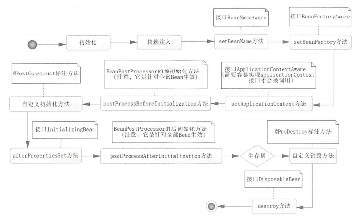
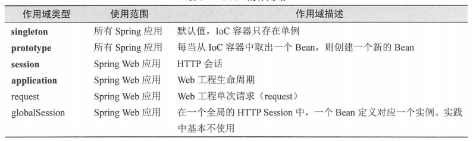
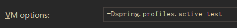
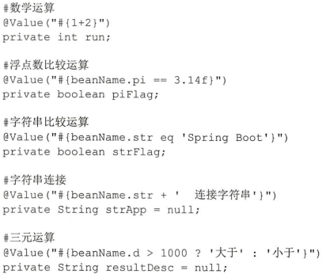

全注解下的Spring IoC

文章目录
IoC容器简介
IoC容器需要具备两个基本功能：
- 通过描述管理Bean，包括发布和获取Bean。
- 通过描述完成Bean之间的依赖关系。
一些Spring IoC知识点：
- Spring IoC容器是一个管理Bean的容器，在Spring的定义中，要求所有的IoC容器都需要实现接口BeanFactory，它是一个顶级容器接口。
- Spring IoC容器中，默认Bean都是以单例存在的。
- Spring的基于注解的IoC容器：AnnotationConfigApplicationContext。
装配Bean
- @Configuration注解的类，代表是一个Java配置文件。Spring容器会根据它来生成IoC容器去装配Bean。
- @Bean注解的方法，代表将方法返回的POJO装配到IoC容器中，其属性定义Bean的名称，如果没配置，则方法名作为Bean的名称。
- @Component注解类，代表此类被扫描进入Spring IoC容器中。
- @ComponentScan注解类，代表采用何种策略去扫描装配Bean。默认扫描当前类所在包及其子包。可以使用excludeFilters属性将一些类排除在外，也可以使用includeFilters定义需要满足的条件。
- @Value注解属性，代表为属性指定具体的值。
依赖注入
@Autowired注解可以放在属性上，也可以放在setter方法上，或者带参的构造器的形参上。默认按照by type的方式进行注入，但是如果一个存在多个可以注入的类型时候，会造成无法判断到底注入哪个bean的情况，此时可以将属性名、形参名改为被注入bean的名字或者将setter参数名改为被注入bean的名字。也可以配合@Qualifier注解直接指定注入某个特定名字的bean。或者在被注入bean添加注解@Primary，那么被注入的时候，将具有优先权。
生命周期
有时候我们需要自定义初始化或者销毁Bean的过程以满足一些Bean特殊初始化和销毁的要求。Bean声明周期大致分为： Bean定义、Bean初始化、Bean的生存期和Bean的销毁 四个部分。对于一个Bean，可以通过定义带有@PostConstruct的方法来定义bean的初始化方法、@PreDestroy来定义bena的销毁方法。
Spring Bean的生命周期如下：

使用属性文件
- spring-boot默认加载application.properties属性文件
- 使用@Value(“${xx.XX}”)注解属性或者setter方法，可以注入属性文件的值。
- 如果懒得写很多个@Value注解，可以使用@ConfigurationProperties(“属性前缀”)注解在类上，将通过bean的setter方法注入属性值。同时需要配置扫描需要的属性文件，在启动类上通过@PropertySource(value = {“classpath:xxx.properties”})来配置。 注意： 需要引入包：spring-boot-configuration-processor。
条件装配Bean
如果需要一定的条件才能装配Bean，则可以通过注解@Conditional(当前类.class)来实现， 注意： 当前类需要实现Condition接口并实现其matches方法，matches方法返回false则不装配此Bean，反之亦反。一个例子如下：
1 2 3 4 5 6 7 8 9 10 11 12 13 14 15 16 17 18 19 20 21 22 23 24 25 26 27 28 29 30 31 32 33 34 35 36 37 38 39 40 41 42 43 44 45 46 47 48 49 50 51 52 53 54 55 56 57 58 59 60 61 62 63 64 65 66 67 68 69 70 71 72 73 74 75 76 77 78 79 80 81 82 |
/**
* @Author: P1n93r
* @Date: 2020/9/1 10:07
* 使用属性文件
*/
@Component
@ConfigurationProperties("database")
@Configuration
public class DataSource implements Condition {
private String driver;
private String url;
private String username;
private String password;
private Integer aa;
public void setUsername(String username){
this.username=username;
}
public void setPassword(String password) {
this.password = password;
}
public void setDriver(String driver) {
this.driver = driver;
}
public void setUrl(String url) {
this.url = url;
}
public void setAa(Integer aa) {
this.aa = aa;
}
/**
* Bean销毁的时候，调用close来关闭数据库连接
*/
@Bean(value = "datasource",destroyMethod = "close")
@Conditional(DataSource.class)
public BasicDataSource getDataSource(){
Properties properties = new Properties();
properties.setProperty("driver",driver);
properties.setProperty("url",url);
properties.setProperty("username",username);
properties.setProperty("password",password);
try {
return BasicDataSourceFactory.createDataSource(properties);
} catch (Exception e) {
e.printStackTrace();
}
return null;
}
@Override
public String toString() {
return "DataSource{" +
"driver='" + driver + '\'' +
", url='" + url + '\'' +
", username='" + username + '\'' +
", password='" + password + '\'' +
", aa=" + aa +
'}';
}
/**
* 根据条件装配Bean
*/
@Override
public boolean matches(ConditionContext conditionContext, AnnotatedTypeMetadata annotatedTypeMetadata) {
Environment environment = conditionContext.getEnvironment();
return environment.containsProperty("driver")&&
environment.containsProperty("url")&&
environment.containsProperty("username")&&
environment.containsProperty("password");
}
} |
Bean的作用域

使用@Profile
Spring提供了Profile机制，可以实现各个环境之间的切换。例如存在test、dev两个数据库，可以使用@Profile定义两个Bean。一个代码示例如下：
1 2 3 4 5 6 7 8 9 10 11 12 13 14 15 16 17 18 19 20 21 22 23 24 25 26 27 28 29 30 31 32 33 34 35 36 37 38 39 40 |
/**
* Bean销毁的时候，调用close来关闭数据库连接
*/
@Profile("dev")
@Bean(value = "datasourceDev",destroyMethod = "close")
@Conditional(DataSource.class)
public BasicDataSource getDataSourceDev(){
Properties properties = new Properties();
properties.setProperty("driver",driver);
properties.setProperty("url",url);
properties.setProperty("username",username);
properties.setProperty("password",password);
try {
return BasicDataSourceFactory.createDataSource(properties);
} catch (Exception e) {
e.printStackTrace();
}
return null;
}
/**
* Bean销毁的时候，调用close来关闭数据库连接
*/
@Profile("test")
@Bean(value = "datasourceTest",destroyMethod = "close")
@Conditional(DataSource.class)
public BasicDataSource getDataSourceTest(@Value("${test.database.url}") String url){
Properties properties = new Properties();
properties.setProperty("driver",driver);
properties.setProperty("url",url);
properties.setProperty("username",username);
properties.setProperty("password",password);
try {
return BasicDataSourceFactory.createDataSource(properties);
} catch (Exception e) {
e.printStackTrace();
}
return null;
} |
此时设置VM Options来选择启动哪个环境，例如设置如下：

那么Spring会加载application-test.properties文件（经测试也会加载application.properties）来启动SpringBoot程序。来达到切换环境的目的。
Notice： 上面的@Profile(“dev”)的Bean不会被Spring容器装载。因为选择启动的是test环境
引入XML装配Bean
SpringBoot建议使用注解和扫描配置Bean，但是不拒绝使用XML配置Bean，也可以在SpringBoot中使用XML对Bean进行装配。使用注解@ImportResource(value={“classpath:xxx.xml”})注解在配置类上，来加载xml配置文件。
使用Spring EL
Spring提供了表达式语言SpringEL来更好的装配Bean。常用的SpringEL如下：

文章作者 P1n93r
上次更新 2020-08-31